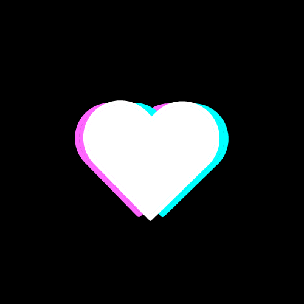
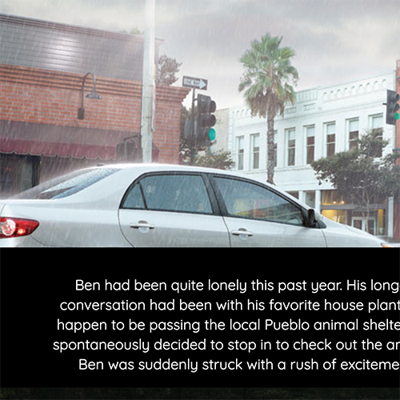
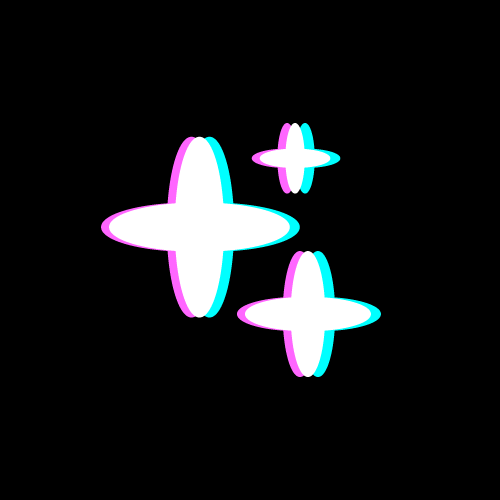
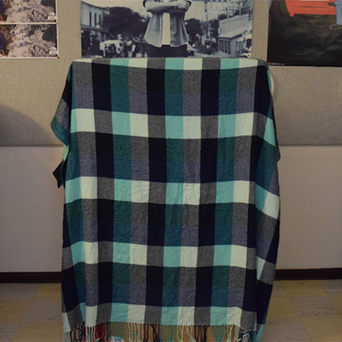
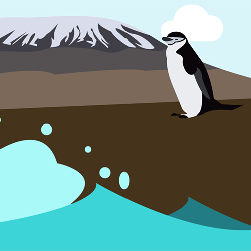

Bash_Me
A very basic HTML webpage profile created and uploaded to the Internet servers using Terminal/Bash exclusively.
Love Letters
A collection of letters to basic web workflow tools, including bash, git, and github. Some are powerful declarations of love, others might be raw and unfiltered breakup letters — but all feature some basic operating procedures for working with each one.
Exquisite Corpse
A creative, collaborative narrative in which each group member contributes a paragraph based on what the last preson has written. The design of the webpage is also a collaborative effort.
Sprite
A site with some fun buttons made using Font Awesome icons, Photoshop, and Compass. My first sprite sheet!
Animation
Taking the sprite capabilities of Compass even farther, this page features an animation using 25 .png files, created by yours truly.
Parallax
A parallax website created exclusively with parallax, featuring original artwork and a thrilling tale about penguins!
GitHub
Check out my GitHub page to browse my repositories or take a closer look at my code!